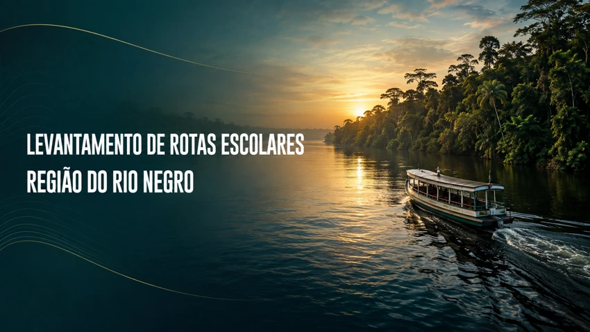

24 a 28 de agosto de 2026
Rio Negro
29 escolas · 31 ações. O relatório registra o retorno a duas escolas para individualizar suas rotas. Confirma 27 percursos registrados e duas visitas sem execução do percurso.
Ver registros do Rio Negro ↓